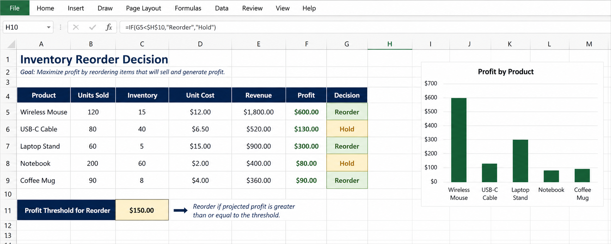

BUS 123 · INTRO · M01 · L01-L02 · FALL 2026
Expectations, Canvas, case companies, Microsoft 365, and the file workflow we will use all semester.
Meet your professor and understand the course roadmap, standards, and grading methodlogy.
Meet the recurring case companies we will use this semester
Learn to navigate Canvas and to avoid the file-submission mistakes that cost time
Set up your Microsoft 365 and OneDrive workflow for class work.
Before Excel becomes useful, students need a workflow: where files live, where instructions live, what a good submission looks like, and why business context matters
This module gives students the map before they start building workbooks
The point is not clicking buttons. The point is using tools to make clearer business decisions.
We will build files, analyses, and communication artifacts that resemble actual business work.
Excel becomes the modeling space where business context, math, and communication meet.
What the semester is, how it builds, and how students know what good work looks like.
File management, Excel basics, formulas, and the OneDrive workflow.
Unit pricing, payroll, markup, markdown, COGS, and operating costs.
Time value of money, amortization, breakeven analysis, and the capstone.
Showing up, building the workbook, and submitting the correct file are the most important grade habits.
Not yet applying the concept.
Some errors or inconsistent application.
Full-credit target work.
Optional challenge work.
Most workbooks include a main tab for Level 3 and a challenge tab for Level 4.
Communicate early. Submit something. Do not disappear.
Find each item first, then help someone nearby.
Uploading a blank starter template or last week's homework is not recoverable after the deadline. Check the file name, open the file, and confirm you are looking at your own work.
The recurring client companies give business context to the spreadsheets students build.
BUS123 is not about random formulas. Each workbook should feel like a decision someone at a business needs to make.
That is why students meet the companies early and return to them throughout the semester.
Inventory, COGS, markup, markdown, and product decisions.
Payroll, loans, interest, and time value of money.
Breakeven, seasonal cash flow, labor, and event pricing.
Payer mix, payroll complexity, reporting, and budgets.
Role, vocabulary, context, and decision background live here.
Open the workbook and start typing formulas before reading the company context.
Read the profile first. Know who you are helping and what decision the spreadsheet should support.
Write one business question they might ask you to answer with Excel.
Would the answer become a table, chart, workbook, report, or slide? Explain why.
That is the standard we will use all semester.

The file workflow students need before the Excel work starts.
Tool fluency is not a nice-to-have. It is how teams avoid version chaos, missing files, and unclear ownership.
Students will practice the same habits they will need in internships and jobs.
Numbers, formulas, models, and analysis.
Memos, reports, proposals, and structured writing.
Presentations, visual storytelling, and synthesis.
Files sync automatically, stay available across devices, and support collaboration without emailing attachments.
That is why we set it up before the first serious workbook.
Open the OneDrive desktop app, not just the browser version.
Sign in with your Endicott email so it connects to the institutional account.
Confirm the sync icon is active before you leave class.
|- BUS123
| |- Modules
| |- Activities
| |- Submissions
Use the same structure all semester.
Modules hold readings and slides. Activities hold in-class files. Submissions hold your final upload copies.
final.xlsx
final2.xlsx
final_REAL.xlsx
OneDrive synced folder
Version history
One source of truth
A retail team is juggling product lists, order updates, and weekly spreadsheet analysis.
If three people update three different copies, the business decision is already in trouble.
Be ready to share one sentence: the company, the problem, and what they had to figure out.
Better data changes the decision.
Shared tools make the workflow visible.
The right tool reduces friction.
of business tasks involve creating, analyzing, or sharing information. Most of those tasks run through tools like Excel, Word, PowerPoint, and OneDrive.
Save work in the BUS123 OneDrive folder. Get in the habit now, before the files become more important.
We will tour the interface, learn how spreadsheets are structured, and start entering and formatting real data.
Before you arrive: make sure OneDrive is set up and your BUS123 folder is syncing.
Questions?